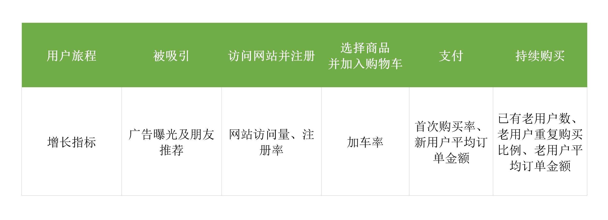
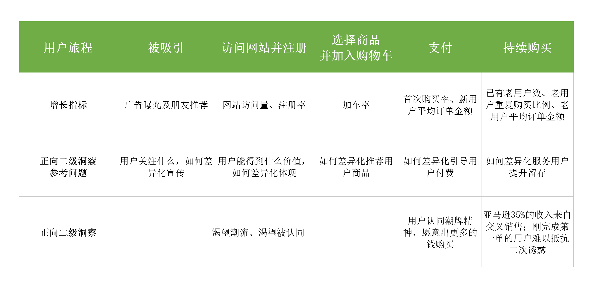
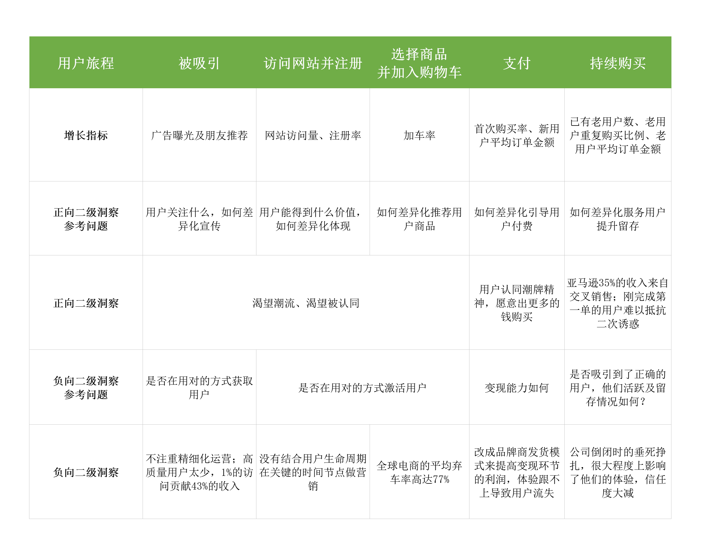
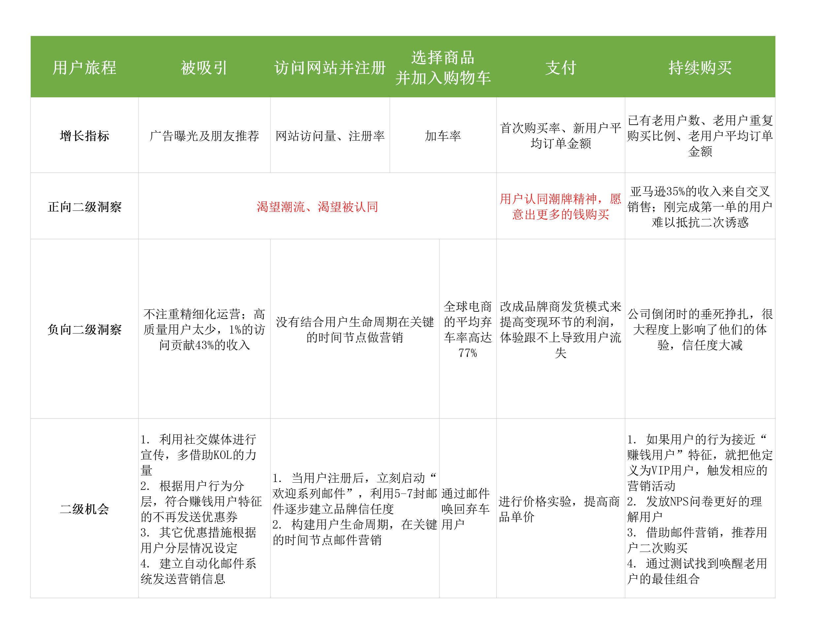
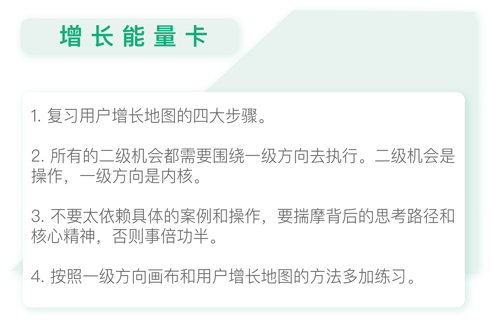

- 00 开篇词 人人都是增长官.md.html
- 01 预习 增长小白如何“弯道超车”？.md.html
- 02 预习 如何理解“增长”？.md.html
- 03 预习 不同职能如何做好增长？.md.html
- 04 预习 做增长如何处理职能间的矛盾？.md.html
- 05 正确目标找不对，天天加班也枉然.md.html
- 06 活学活用北极星指标.md.html
- 07 OKR如何助力增长？.md.html
- 08 不懂用户调研？那就对了！.md.html
- 09 调研目标：在差异性洞察中找到爆破点.md.html
- 10 数据分析：在“花式对比”中发现玄机.md.html
- 11 用户分类：围绕北极星指标细分人群.md.html
- 12 用户访谈：像侦探一样寻找破案线索（上）.md.html
- 13 用户访谈：像侦探一样寻找破案线索（下）.md.html
- 14 提炼用户差异，发现增长契机.md.html
- 15 挖掘产品优势，打破增长瓶颈.md.html
- 16 定位营销差异，抢占用户心智.md.html
- 17 一级方向：找到增长爆破点.md.html
- 18 B端产品如何调研？.md.html
- 19 全局规划增长机会.md.html
- 20 统筹全局的用户增长地图.md.html
- 21 案例解析：定义关键增长指标.md.html
- 22 正负双向洞察，找准切入点.md.html
- 23 二级机会：制定增长策略.md.html
- 24 为一家濒临破产的公司制定增长策略（上）.md.html
- 25 为一家濒临破产的公司制定增长策略（中）.md.html
- 26 为一家濒临破产的公司制定增长策略（下）.md.html
- 27 为什么指标数据怎么优化都不提升？.md.html
- 28 案例解析：打造增长闭环（上）.md.html
- 29 案例解析：打造增长闭环（下）.md.html
- 30 案例解析：唤醒沉睡用户（上）.md.html
- 31 案例解析：唤醒沉睡用户（下）.md.html
- 32 没有分解，就无缘增长.md.html
- 33 四个要点颠覆传统需求文档.md.html
- 34 三级落地：无限场景应用.md.html
- 35 手把手教你设计一次成功的实验（上）.md.html
- 36 手把手教你设计一次成功的实验（下）.md.html
- 37 积少可成多，别针换别墅.md.html
- 38 四级延续：增长组件库案例.md.html
- 39 以用户为中心增长.md.html
- 增长导航图 增长专栏的知识架构是怎样的？.md.html
- 尾声 结束意味着新的开始.md.html
- 预习答疑 你需要一张思维导图吗？.md.html
- 捐赠
26 为一家濒临破产的公司制定增长策略（下）
你好，我是刘津。
今天我们接上一讲内容，看看要如何围绕一级方向，通过用户增长地图为Karmaloop制定二级增长策略。
回顾用户增长地图
我们先来回顾一下用户增长地图的内容，你还记得吗？这里一共有4点。
- 北极星指标&一级方向
- 用户旅程&增长指标
- 二级洞察（正向&负向）
- 二级机会
现在，我会带着你逐一完成这些内容，告诉你要如何用这几点来分析案例。我建议在每个具体部分展开之前，你能够先按照自己的理解把它们写下来，然后再参考我的内容，这样更有助于你日后的实战。
分析二级增长策略
准备好了吗？现在我们来尝试分析Karmaloop的二级增长策略。
1.北极星指标&一级方向
第一步，是北极星指标和一级方向，我们已经通过上一讲的内容得出了结论。
根据上一讲的内容，Karmaloop现阶段的北极星指标是“用户量增长且盈利”；一级方向是“突出和强调潮牌定位”。
2.用户旅程&增长指标
第二步，是用户旅程和增长指标。
Karmaloop是个海外产品，你应该是没有用过，所以为了方便你理解，我会按照常规电商网站的流程来梳理。那么用户旅程和对应的增长指标可以分为5点。

- 被吸引：广告曝光及朋友推荐；
- 访问网站并注册：网站访问量、注册率；
- 选择商品并加入购物车：加车率；
- 支付：首次购买率、新用户平均订单金额；
- 持续购买：已有老用户数、老用户重复购买比例、老用户平均订单金额。
通过表格，相信你能更清楚直观地看到这个用户旅程。
3.二级洞察
接下来我们加入第三步，二级洞察。这里，我们要先回答一级洞察的核心内容，即用户是谁？它的差异特征是什么？如何差异化地满足？
通过上一篇文章的分析，得到的一级洞察是：用户是认可潮牌文化的小众群体，以及渴望潮流、渴望被认同的大众群体。应该通过强调潮牌地位的领先者来差异化的满足用户群体。
那么与这个一级洞察对应的二级洞察是什么呢？还记得之前讲过的正负双向洞察吗？这里就要用上了。
我们先来说正向二级洞察，因为优点比缺点更重要。还记得那五个关于二级洞察的参考问题吗？我把这五个问题与用户旅程对应，一一列在下面这个表格里供你参考。

对应的，我们可以以二级洞察参考问题为方向来得到正向二级洞察。这些洞察有的是来自前面的用户洞察，有的是来自于数据分析。数据分析可以是跟自己产品相关的，也可以是行业数据带来的启发。
现在我们再来看看负向的二级洞察。

表格里同样是根据负向二级洞察的参考问题来得到负向二级洞察。你可以自行查看。
4.二级机会
第四步，也是最重要的一步，我们需要结合正向的二级洞察和负向的二级洞察得到增长机会。

这里需要注意的是：所有的二级机会不管怎么做，都需要围绕一个核心，那就是突出潮牌精神，强化Karmaloop的潮牌领导地位，强调它的价值和文化。缺少了这个核心，再怎么做都只是机械的操作和执行，最终的效果自然也很难令人满意。
这就好像画匠和大师的区别，画匠虽然可以画其“形”，却无法画其“神”。我们学习增长案例，既要关注他们的操作手段，更重要的是要揣摩背后的核心精神，这些东西才是最重要的。而市面上总结的增长案例恰恰隐藏掉了这些关键的东西，只是把表面上的策略告诉你。所以你即便完全照做，也觉得效果并不好。
说这些是真心希望大家不要太依赖具体的案例和操作，如果你不知道背后的思考路径，只是简单地模仿和复制，那其实和你想要快速见效的初衷反而会背道而驰。
总之，一级方向画布和用户增长地图给我们提供了清晰的框架，帮助我们明确大方向并做好重要的决策而不遗漏关键的内容。相信通过它们，以后不管再遇到什么案例，你都可以按照这个逻辑去梳理，而不是看着别人的“经验之谈”不知从何下手。
希望你可以多加练习，慢慢地，你就会融会贯通，看到市面上任何增长案例都能知道它从何处来，又能到何处去，因为你心中已经有了一个非常坚实的逻辑框架。
好了，到现在，最艰难的“拔高”的部分终于结束了，感谢你坚持到这里。从下一讲开始，我将为你讲解具体落地执行的部分。

思考题
按照我教你的方法，复盘市面上的某个增长案例，找找感觉。
欢迎把你的思考和疑问通过留言分享出来，与我和其他同学一起讨论。如果你觉得有所收获，也欢迎把文章分享给你的朋友。
© 2019 - 2023 Liangliang Lee. Powered by gin and hexo-theme-book.